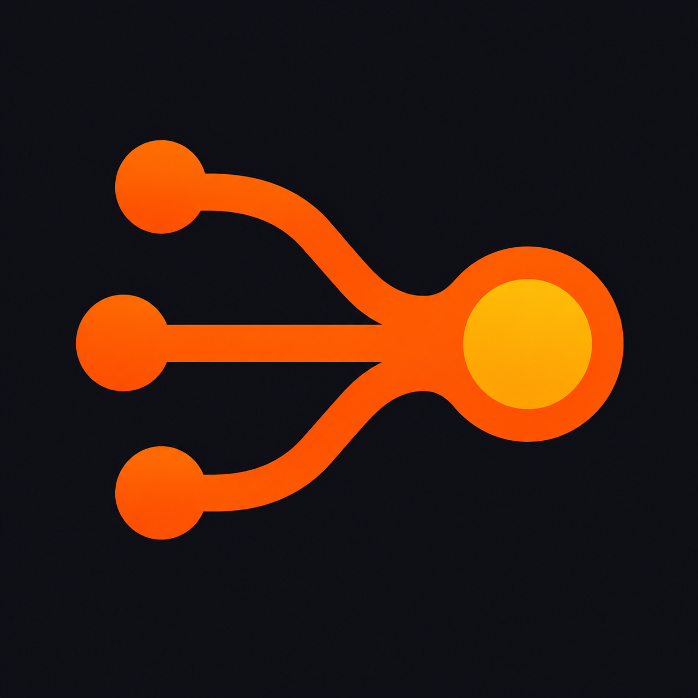
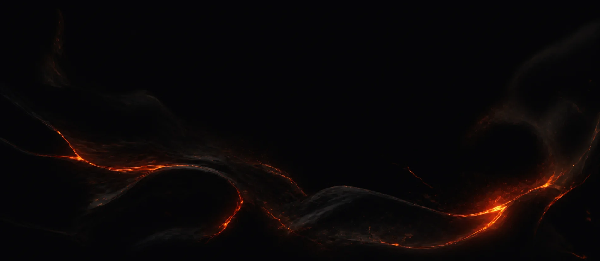

Обычный сценарий
Каждый следующий шаг ждёт предыдущий, даже если задачи не связаны.

Lawa GitHub ↗Workflow-оркестратор для Codex
Разложите работу на независимые потоки. Lawa запустит AI-агентов параллельно, дождётся зависимостей и соберёт всё в один результат.
Листайте вниз
01 / Поток вместо очереди
Обычный сценарий
Каждый следующий шаг ждёт предыдущий, даже если задачи не связаны.
С Lawa
Независимые ветки идут одновременно и сходятся только там, где это нужно.

02 / Как это работает
03 / Состояние под контролем
Lawa сохраняет граф, чаты и память каждого агента. После сбоя или паузы
resume продолжает существующий запуск без дублей.
Контекст проектазавершено
Ревью архитектурывыполняется
Проверка тестоввыполняется
Итоговый отчётждёт зависимости
04 / Быстрый старт
macOS и Linux · один бинарник · работа из привычного чата Codex.
Установка последней версии
curl -fsSL https://github.com/stray-live-pixel/Lawa/releases/latest/download/install.sh | sh
После установки сформулируйте задачу и вызовите $lawa в Codex.